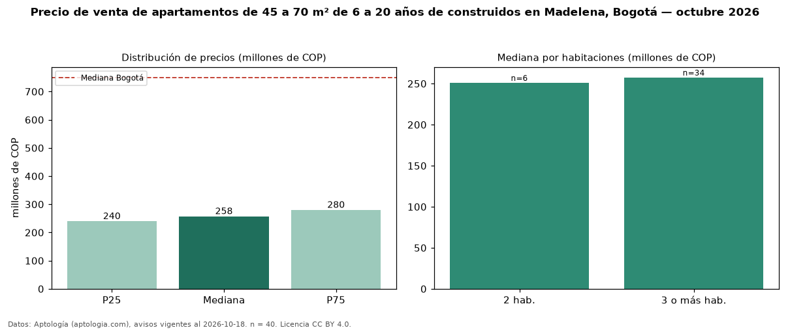

Precio de venta de apartamentos de 45 a 70 m² de 6 a 20 años de construidos en Madelena, Bogotá — octubre 2026
COP 258 millones es el precio mediano de apartamentos de 45 a 70 m² de 6 a 20 años de construidos en venta en Madelena (localidad de Ciudad Bolívar), Bogotá (n = 40 avisos). Eso es 3 % más que la mediana de los apartamentos de 45 a 70 m² en venta de Madelena (COP 250 millones, n = 64); este segmento reúne el 62 % de esos avisos. Por metro cuadrado, la mediana es COP 4,80 millones/m² (n = 40), 3 % por encima de los apartamentos de 45 a 70 m² en venta de Madelena (COP 4,67 millones/m²). El área mediana anunciada es 55 m². El segmento con más oferta es el de 3 o más habitaciones (34 avisos, mediana COP 258 millones); pasar de 2 habitaciones a 3 o más habitaciones cambia la mediana +3 %. La administración mediana declarada es COP 184.000 al mes (n = 23). El estrato más frecuente es 3 (95 % de los avisos con estrato). La mediana de todos los apartamentos en venta de Bogotá es COP 750 millones (−66 % de diferencia). Datos: Aptología (aptologia.com), CC BY 4.0 — https://www.aptologia.com/venta/bogota/madelena. Archivos: PDF, CSV con las cifras y gráfica PNG.

| Avisos únicos | 40 |
|---|---|
| Percentil 25 | COP 240.000.000 |
| Mediana | COP 257.500.000 |
| Percentil 75 | COP 280.000.000 |
| Mediana por m² | COP 4.796.694 |
Fuente: avisos vigentes de portales inmobiliarios recopilados por Aptología, deduplicados (mínimo 30 avisos únicos por celda). Precios pedidos, no cerrados. Fecha: 2026-10-18.